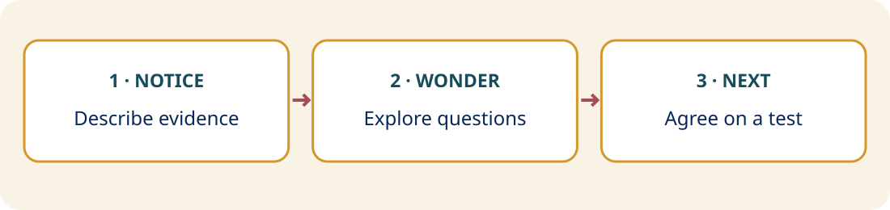

Notice · What happened?
Describe observable teacher and student behavior. “I noticed the teacher paused before inviting a response.”
Practice
Move from observable evidence to inquiry and one manageable action.

Describe observable teacher and student behavior. “I noticed the teacher paused before inviting a response.”
Explore interpretations and missing evidence. “I wonder how that thinking time affected student responses.”
Agree on one manageable change and evidence. “What if students wrote first? How would we know whether it helped?”
Take the coach role for two minutes, then switch for two minutes. Ask questions grounded in the shared example. Which question encouraged reflection rather than defense?
Coach: When you watched the clip, what stood out?
Teacher: I noticed I gave students time to think before asking for an answer.
Coach: What did you notice about how students used that time?
Teacher: Some appeared to prepare a response. I’d like to know whether more were ready.
Coach: What might help you gather that evidence?
Teacher: I could ask students to write before choosing someone to respond.
Coach: What would you look for to decide whether that helped?
Teacher: The number producing a response and the quality of their explanations.
Coach: When would you like to try it?
| Evaluative statement | Reflective question |
|---|---|
| You talked too much. | What do you notice about the balance of teacher and student talk? |
| Students weren’t engaged. | What evidence do we have about student participation? |
| Your questioning needs improvement. | Which questions produced useful student responses? |
| You should wait longer. | What might change with more thinking time? |
| You need to involve more students. | How might you gather responses from more students? |
Begin with teacher reflection, recognize strengths, avoid blame and personal judgments, and agree on follow-up. Questions alone cannot meet every need: offer direct information, modeling, resources, or explicit feedback when useful.